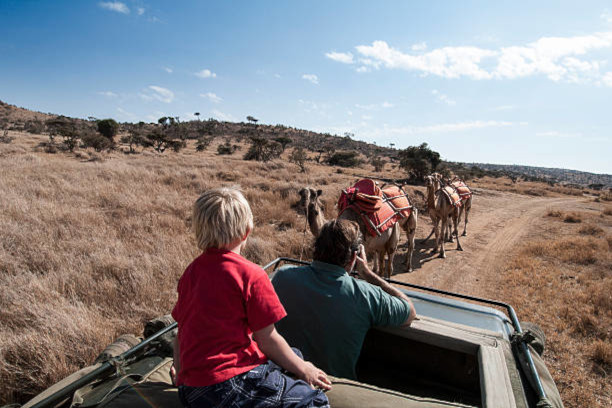
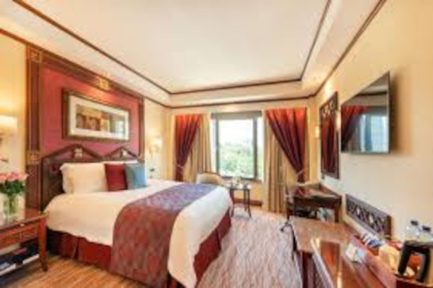
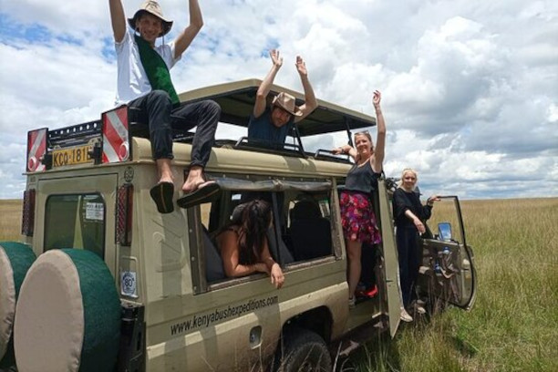

Nairóbi é uma das poucas cidades no mundo a possuir um parque nacional
dentro de seus limites territoriais, tornando-se um destino turístico de
excelência, bem como, conta com várias outras atrações turísticas. O mais
famoso é o Parque Nacional de Nairóbi, o único parque de vida selvagem em
uma grande cidade no mundo.
Nairóbi é uma das poucas cidades no mundo a
possuir um parque nacional dentro de seus limites
territoriais, tornando-se um destino turístico de
excelência, bem como, conta com várias outras
atrações turísticas. O mais famoso é o Parque
Nacional de Nairóbi, o único parque de vida
selvagem em uma grande cidade no mundo.
Valor por pessoa por 10 dias: R$3.210
 Faça sua reserva aqui
Faça sua reserva aqui